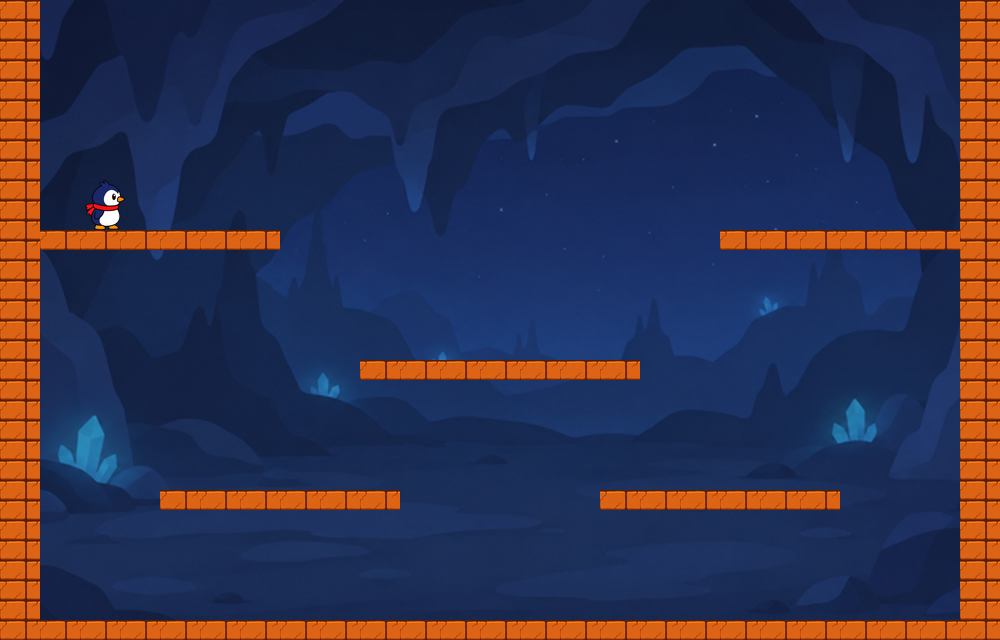
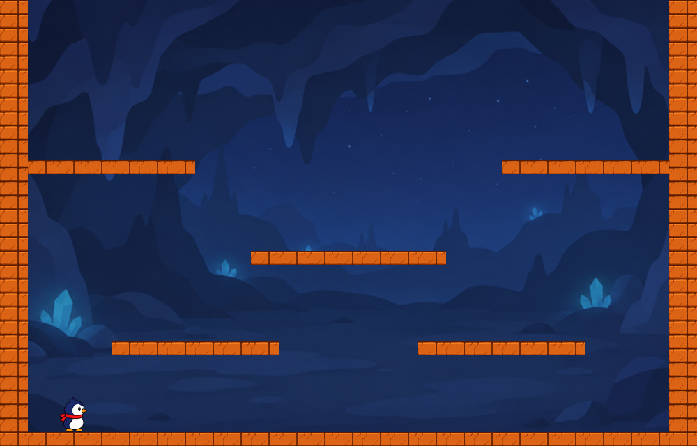
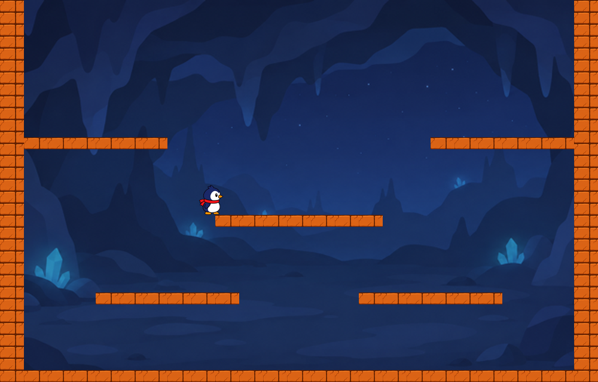

6장. 발판과 중력
5장에서는 양쪽에 벽돌 벽을 세우고 펭귄의 이동 범위를 제한했습니다. 이번 장에서는 바닥과 발판을 만듭니다. 펭귄이 아래로 떨어지다가 발판 위에 서도록 바꿉니다.
발판의 위치와 크기는 Rectangle 목록에 담습니다. 이 목록으로 벽돌을 배치하고 착지도 확인합니다. 장을 마치고 게임을 실행하면 왼쪽 위에서 떨어진 펭귄이 다음과 같이 발판에 섭니다.

6-1 발판 목록을 벽돌로 그리기
발판을 만들려면 화면에 보이는 벽돌과 펭귄이 착지할 영역이 필요합니다. 벽돌의 위치와 착지 영역을 따로 작성하면 서로 어긋날 수 있습니다. 그러면 벽돌은 보이는데 펭귄이 통과하는 문제가 생깁니다. 발판 목록 하나를 만들고, 그리기와 착지 판정에 함께 사용합니다.
발판의 위치와 크기 기록하기
src/bubble/game/BubbleFrame.java를 수정합니다. Rectangle, ArrayList, List를 가져오고 floors 필드를 추가합니다. 생성자에서는 양쪽 벽을 만드는 반복문 다음에 바닥과 발판을 만드는 코드를 넣습니다.
package bubble.game;import java.awt.Rectangle;import java.awt.event.KeyAdapter;import java.awt.event.KeyEvent;import java.util.ArrayList;import java.util.List;import javax.swing.ImageIcon;import javax.swing.JFrame;⋯ private Player player; private ImageIcon brickIcon = new ImageIcon("image/brick.png"); private List<Rectangle> floors = new ArrayList<>(); public BubbleFrame() { setTitle("버블 게임");⋯ addBrick(960, y); } floors.add(new Rectangle(40, 620, 920, 20)); floors.add(new Rectangle(160, 490, 240, 20)); floors.add(new Rectangle(600, 490, 240, 20)); floors.add(new Rectangle(360, 360, 280, 20)); floors.add(new Rectangle(40, 230, 240, 20)); floors.add(new Rectangle(720, 230, 240, 20)); for (Rectangle floor : floors) { for (int x = floor.x; x < floor.x + floor.width; x += 40) { addBrick(x, floor.y); } } addKeyListener(new KeyAdapter() { @Override public void keyPressed(KeyEvent e) {Rectangle은 위치와 크기를 나타내는 사각형입니다. new Rectangle(x, y, width, height)에 왼쪽 위 좌표와 너비, 높이를 지정합니다. 사각형 객체를 만드는 것만으로 화면에 그림이 나타나지는 않습니다.
floors에는 바닥 하나와 발판 다섯 개를 담습니다. 각 사각형의 높이는 20이며, y 값은 펭귄이 설 윗면의 위치입니다.
| 구분 | 왼쪽 좌표 x | 윗면 좌표 y | 너비 |
|---|---|---|---|
| 바닥 | 40 | 620 | 920 |
| 아래 왼쪽 발판 | 160 | 490 | 240 |
| 아래 오른쪽 발판 | 600 | 490 | 240 |
| 가운데 발판 | 360 | 360 | 280 |
| 위 왼쪽 발판 | 40 | 230 | 240 |
| 위 오른쪽 발판 | 720 | 230 | 240 |
Swing 화면에서는 아래로 갈수록 y 값이 커집니다. 따라서 y가 230인 발판이 490인 발판보다 위에 놓입니다.
사각형의 너비만큼 벽돌 놓기
바깥쪽 반복문은 floors에서 사각형을 하나씩 꺼냅니다. 안쪽 반복문은 해당 사각형의 왼쪽 끝부터 오른쪽 끝까지 벽돌을 놓습니다.
안쪽 반복문의 시작 위치는 floor.x입니다. 벽돌의 너비가 40이므로 x를 40씩 늘리며 addBrick(x, floor.y)를 호출합니다. 양쪽 벽을 만들 때 사용한 메서드를 발판에도 사용합니다.
예를 들어 아래 왼쪽 발판은 x가 160에서 시작하고 너비가 240입니다. 벽돌은 160, 200, 240, 280, 320, 360에 하나씩 놓입니다. 마지막 벽돌의 오른쪽 끝은 발판의 오른쪽 끝인 400에 맞습니다.
floor.height는 벽돌을 가로로 배치하는 반복문에서 사용하지 않습니다. 이번 장의 착지 판정에서도 사각형 전체가 겹치는지보다 윗면을 통과했는지 확인합니다.
바닥과 발판 확인하기
파일을 저장하고 BubbleFrame을 Run As → Java Application으로 실행합니다.
실행 결과
양쪽 벽 사이에 바닥과 발판 다섯 개가 벽돌로 나타납니다. 아직 펭귄의 세로 이동 코드가 없으므로, 펭귄은 이전 장처럼 바닥 왼쪽에 있습니다.

바닥 위에 선 펭귄의 y 좌표는 570입니다. 펭귄의 높이가 50이므로 아래쪽 끝은 620이고, 바닥의 윗면과 맞닿습니다. 다음 절에서는 이 관계를 이용해 떨어지는 펭귄을 발판 위에 세웁니다.
6-2 중력으로 떨어져 발판에 서기
지금은 펭귄이 좌우로만 움직입니다. 발판을 만들어도 그 위로 떨어지지는 않습니다. 게임 루프에서 세로 위치도 바꾸고, 발판의 윗면을 지나는 순간에 멈추도록 고칩니다.
매번 같은 거리만 내려가면 일정한 속도로 떨어집니다. 떨어질수록 빨라지게 하려면 세로 이동 속도를 따로 기억해야 합니다. 게임 루프가 반복될 때마다 그 속도를 늘립니다.
세로 속도와 착지 메서드 추가하기
Player.java에 GRAVITY와 dy를 추가합니다. GRAVITY는 한 번 갱신할 때 세로 속도에 더할 값입니다. dy는 한 번 갱신할 때 이동할 세로 거리입니다.
생성자의 시작 위치도 바꿉니다. 기존의 y = 570을 y = 40으로 고쳐 펭귄이 화면 왼쪽 위에서 출발하게 합니다. 이어서 fall() 메서드를 추가합니다. BubbleFrame.java의 Timer가 이 메서드도 호출하도록 수정합니다.
수정 파일: src/bubble/game/Player.java, src/bubble/game/BubbleFrame.java
package bubble.game;import java.awt.Rectangle;import java.util.List;import javax.swing.ImageIcon;import javax.swing.JLabel;⋯public class Player extends JLabel { private static final int SPEED = 4; private static final int GRAVITY = 1; private int x; private int y; private int dy; @Setter private boolean left; @Setter⋯ playerR = new ImageIcon("image/playerR.png"); playerL = new ImageIcon("image/playerL.png"); x = 80; y = 570; y = 40; direction = Direction.RIGHT; setIcon(playerR); setSize(50, 50);⋯ } setLocation(x, y); } public void fall(List<Rectangle> floors) { int bottom = y + 50; dy += GRAVITY; y += dy; for (Rectangle floor : floors) { boolean above = bottom <= floor.y && y + 50 >= floor.y; boolean across = x + 50 > floor.x && x < floor.x + floor.width; if (above && across) { y = floor.y - 50; dy = 0; } } setLocation(x, y); }} } }); new Timer(16, e -> player.move()).start(); new Timer(16, e -> { player.move(); player.fall(floors); }).start(); pack(); setResizable(false);속도를 늘린 뒤 위치 바꾸기
dy는 int 필드이므로 처음에는 0입니다. fall()을 호출할 때마다 dy += GRAVITY로 속도를 늘리고, y += dy로 위치를 바꿉니다.
GRAVITY가 1이므로 착지하기 전까지 dy는 1, 2, 3 순서로 커집니다. 한 번에 내려가는 거리도 1, 2, 3으로 늘어납니다. 아래로 갈수록 y가 커지므로 양수인 dy를 더하면 펭귄이 아래로 떨어집니다.
여기서 중력(gravity)은 세로 속도를 계속 늘리는 규칙입니다. 실제 시간에 따른 물리 계산 대신, 게임 루프가 한 번 실행될 때마다 정해진 값을 더합니다.
메서드 첫 줄의 bottom은 이동하기 전 펭귄의 아래쪽 끝입니다. 펭귄의 높이가 50이므로 y + 50으로 구합니다. 이 값을 먼저 저장해야 이동 전과 이동 후의 위치를 비교할 수 있습니다.
발판의 윗면을 지났는지 확인하기
펭귄이 떨어질 때는 발판과 닿는지 확인해야 합니다. 낙하 속도가 커지면 한 번 갱신하는 동안 발판의 윗면을 지나칠 수도 있습니다. 펭귄의 아래쪽 끝과 발판 윗면의 좌표가 정확히 같은지만 비교하면 착지를 놓치게 됩니다.
above는 펭귄의 아래쪽 끝이 발판 윗면을 통과했는지 확인합니다.
bottom <= floor.y는 이동 전의 아래쪽 끝이 발판 윗면보다 위에 있거나 같은 높이였다는 뜻입니다. y + 50 >= floor.y는 이동 후의 아래쪽 끝이 발판 윗면에 닿았거나 그 아래로 내려왔다는 뜻입니다.
두 조건이 모두 참이면 이번 이동에서 발판 윗면에 닿았거나 그 아래로 내려온 것입니다. 예를 들어 발판의 윗면이 230일 때, 펭귄의 아래쪽 끝이 225에서 234로 이동해도 착지를 확인합니다.
across는 펭귄과 발판이 가로로 겹치는지 확인합니다. 펭귄의 오른쪽 끝인 x + 50이 발판의 왼쪽 끝보다 오른쪽에 있어야 합니다. 동시에 펭귄의 왼쪽 끝인 x가 발판의 오른쪽 끝보다 왼쪽에 있어야 합니다.
이 조건에서는 가장자리끼리 맞닿기만 하면 가로로 겹친 것으로 보지 않습니다. 펭귄의 폭이 발판과 조금이라도 겹쳐야 발판이 펭귄을 받칩니다.
발판 위로 위치를 맞추고 멈추기
above와 across가 모두 참이면 착지합니다. 이때 y = floor.y - 50으로 펭귄의 위치를 맞춥니다. 발판의 윗면에서 펭귄의 높이만큼 빼면 펭귄의 발이 발판에 놓입니다.
왼쪽 위 발판의 윗면은 230이므로 착지한 펭귄의 y 좌표는 180입니다. 이동 후 위치를 그대로 두면 펭귄이 발판 안으로 일부 들어갈 수 있습니다. 그래서 착지할 때 좌표를 다시 맞춥니다.
착지할 때는 dy = 0으로 낙하 속도도 없앱니다. 다음 호출에서 중력이 다시 더해지지만, 발판 위에 있는 동안에는 착지 조건이 다시 성립합니다. 그때마다 같은 위치로 맞춰지므로 화면에서는 펭귄이 발판 위에 멈춰 있습니다.
오른쪽으로 걸어 나가 발판과 가로로 겹치지 않으면 across가 거짓이 됩니다. 그때부터 위치를 발판 위로 되돌리지 않으므로 펭귄이 아래로 떨어집니다.
하나의 Timer에서 이동과 낙하 이어 실행하기
기존 Timer는 player.move()만 호출했습니다. 이 코드만으로는 새로 만든 fall()이 실행되지 않습니다. 람다 본문을 중괄호로 묶고, move() 다음에 fall(floors)를 호출하도록 바꿉니다.
Timer의 실행 간격은 기존과 같은 16ms입니다. 호출될 때마다 먼저 좌우 이동을 반영합니다. 이어서 바뀐 x 좌표를 기준으로 낙하와 착지를 확인합니다. 이 순서로 실행하므로 발판 밖으로 걸어 나간 직후부터 떨어집니다.
fall(floors)에 전달하는 목록은 벽돌을 그릴 때 사용한 목록과 같습니다. fall()은 각 발판을 검사한 뒤 setLocation(x, y)로 계산한 위치를 화면에 반영합니다.
발판에 서고 걸어 나가기
실행 중인 게임 창을 닫고 수정한 파일을 저장합니다. BubbleFrame을 다시 실행한 뒤, 처음에는 방향키를 누르지 않습니다.
실행 결과
펭귄은 x = 80, y = 40에서 출발합니다. 아래로 떨어지다가 왼쪽 위 발판에 서며, 발판을 뚫고 내려가지 않습니다.
오른쪽 화살표 키를 누르고 있으면 발판 위를 걷습니다. 발판의 오른쪽 끝을 벗어나면 아래로 떨어집니다. 계속 오른쪽으로 이동해 가운데 발판 위에 도착하면 키를 놓습니다.

가운데 발판의 윗면은 360입니다. 그 위에 선 펭귄의 y 좌표는 310이 됩니다. 키를 놓은 뒤에도 같은 높이에 서 있는지 확인합니다.
장 도입의 화면을 다시 확인하려면 게임을 종료하고 재실행합니다. 방향키를 누르지 않으면 펭귄이 왼쪽 위 발판에 착지합니다.
6장 완성 코드 보관하기
확인을 마치면 src/bubble/game의 이번 장 완성 코드를 ex06에 복사합니다. 다음 장에서는 이 코드에 위로 뛰어오르는 동작을 더합니다.